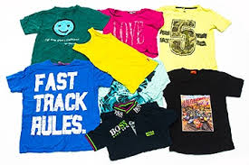

Уже сегодня многочисленные оптовые региональные склады под брендом "SRS Company" работают по всей Украине для того, чтобы существенно сэкономить нашим клиентам/партнерам время и деньги. Наша гибкая система скидок, уникальная программа лояльности и спецпредложений помогают осуществлять успешные и обоюдовыгодные покупки ("win-win").
SRS Company гордится тем, что наши постоянные клиенты, выбрав нас однажды, остаются приверженцами Компании на длительный срок. Мы ценим взаимное сотрудничество и делаем все возможное, чтобы наши предложения были максимально выгодными для Вас.
Вещи, относящиеся к категории Second hand оригинал – это вещи, не прошедшие процедуру сортировки. Обладая невысокой стоимостью, секонд хенд «оригинал» пользуется большой популярностью у практичных покупателей. Одежда секонд хенд собирается в различных, как правило, зажиточных районах Западной Европы, в любое время года и разными способами. Сама же традиция сбора вещей секонд хенд в европейский странах превышает уже сотню лет.
Домашняя сборка или «door to door». При таком методе сборки представители общественных организаций обходят дома и квартиры с предложением сдать ненужные вещи в благотворительных целях. Сборщики просят хозяев дома учитывать просьбу, что одежда должна быть в хорошем состоянии и чистой. Наполненные вещами пакеты выставляются в указанный срок около дверей дома, и представители компании забирают их.
Контейнерная сборка. Одним из самых доступных видов «оригинала» секонд хенда является контейнерная сборка, которая осуществляется путем сбора ненужных вещей в специальные контейнеры, установленные в многолюдных общественных местах (возле крупных супермаркетов, на автостоянках, парковках и т.д.).
Пакеты с ненужными вещами, посетители оставляют в контейнерах. В такой сборке можно встретить самые разнообразные предметы гардероба и домашней утвари, иногда попадаются очень эксклюзивные экземпляры. Невысокая стоимость такого товара компенсирует низкое качество вещей, которые можно обнаружить в пакетах.

Сортированный секонд хенд – секонд-хенд, который проходит отбор и сортировку, как по качественным параметрам, так и по сезонности и типу.
Вся сортированная продукция секонд-хенд в зависимости от качества делится на несколько основных категорий по сортности:
• категория «КРЕМ» – товар высшей категории качества, без или с минимальным износом, присутствует новая одежда с биркой.
• категория «Экстра» - товар, сбалансированный по сочетанию цена/качество, с малым процентом носки, без дырок, могут присутствовать легкоустранимые загрязнения, качественная одежда.
• категория «первый сорт» - товар с небольшими видимыми дефектами или повреждениями, возможно наличие выводимых пятен.
• категория «второй сорт» - товар пригодный для носки.
Сортировка категории «Крем» от европейских поставщиков включает в себя «Крем» + «Экстра».
Приобрести товар можно как на складе, так и в интернет-магазине нашей компании.
Прайс
 • УКРАИНА, Г. ХАРЬКОВ ул. Дербентская, 109а, Тел.: +380 67 1 456 888, +380 63 1 456 888, +380 99 1 456 888 E-mal.: sales@srs-company.ua
• УКРАИНА, Г. ХАРЬКОВ ул. Дербентская, 109а, Тел.: +380 67 1 456 888, +380 63 1 456 888, +380 99 1 456 888 E-mal.: sales@srs-company.ua
• УКРАИНА, Г. КИЕВ переулок Бондарский 3, Тел.: +380 67 1 456 888, +380 63 1 456 888, +380 99 1 456 888, E-mal.: sales.central@srs-company.ua
• УКРАИНА, Г. ЧЕРНОВЦЫ ул. Жасминная, 3-А, Тел.: +380 67 1 456 888, +380 63 1 456 888, +380 99 1 456 888
• УКРАИНА, Г. ДНЕПР ул. Аржанова, 2, Тел.: +380 67 1 456 888, +380 63 1 456 888, +380 99 1 456 888, E-mal.: sales.central@srs-company.ua